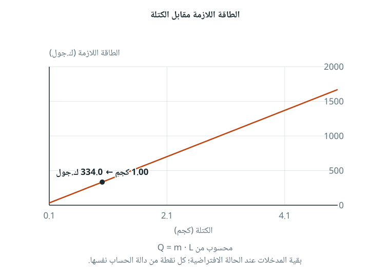

كم طاقة يلزم لتغيير طور المادة؟
غيّر الكتلة والمادة والطور، وتابع الطاقة اللازمة والزمن عند قدرة تسخين 1000 واط.
بداية المقياس على الحالة المرجعية: الكتلة 1.00 كجم، المادة ماء، الطور انصهار = 334.0 ك.جول. محاكاة تعليمية لا قياس فيزيائي حقيقي: الأرقام تُحسب من النموذج لحظيًا.
افتراضات النموذج والمصدر
Q = m · L
مادة نقية عند ضغط ثابت
الحرارة الكامنة ثابتة على مدى الطور
قدرة التسخين 1000 واط بلا فقد
لا شوائب تخفض نقطة الطور
Water — enthalpy of fusion/vaporization (SRD 69) — NIST Chemistry WebBook
Thermodynamics: An Engineering Approach — تغيّر الطور — Cengel & Boles
حين يذوب الجليد أو يغلي الماء تبقى الحرارة ثابتة ما دام الطور يتغيّر. الطاقة الداخلة لا ترفع الحرارة بل تُستهلك في كسر الروابط التي تُمسك الجزيئات في موضعها. مقدارها لكل كيلوجرام خاصية للمادة تُسمّى الحرارة الكامنة النوعية: 334 كيلوجول لكل كيلوجرام لانصهار الجليد، و2260 للتبخّر. الفارق بين الرقمين كبير لأن التبخّر يفصل الجزيئات تمامًا، والانصهار يرخي الروابط فقط.
كيف تعمل الظاهرة؟
في الحالة الصلبة تُثبّت الجزيئات روابطُ بين جزيئية في مواضع منتظمة. تسخين المادة يزيد اهتزازها حول موضعها، وحين تبلغ طاقة الاهتزاز حدًّا يكسر الترتيب يبدأ الانصهار. الطاقة المستهلكة في كسر الترتيب لا تظهر في مقياس الحرارة، لأن الحرارة تقيس متوسط الطاقة الحركية لا الطاقة الكامنة في الروابط.
العلاقة بالأرقام
المعادلة: Q = m · L. عند الكتلة 1.00 كجم، المادة ماء، الطور انصهار ، يعطي الحساب: الطاقة اللازمة = 334.0 ك.جول؛ الطاقة بالجول = 334,000 جول؛ الزمن عند 1000 واط = 334 ثانية. حالة «كيلوجرام ماء ينصهر» (الكتلة 1.00 كجم، المادة ماء، الطور انصهار ): الطاقة اللازمة = 334.0 ك.جول؛ الطاقة بالجول = 334,000 جول؛ الزمن عند 1000 واط = 334 ثانية. حالة «كيلوجرام ماء يتبخّر» (الكتلة 1.00 كجم، المادة ماء، الطور تبخّر ): الطاقة اللازمة = 2,260.0 ك.جول؛ الطاقة بالجول = 2.26e+6 جول؛ الزمن عند 1000 واط = 2,260 ثانية. هذه أمثلة مولدة من دالة الحساب نفسها؛ وليست قياسات فعلية أو مواصفات لجهاز تجاري.
مفاهيم متقاربة
يُخلط بين الحرارة النوعية والحرارة الكامنة: الأولى ترفع الحرارة لكل كيلوجرام لكل كلفن، والثانية تغيّر الطور بلا تغيّر حرارة. ويُخلط بين الانصهار والتبخّر: كلاهما تغيّر طور، لكن التبخّر يفصل الجزيئات كليًّا فتبلغ طاقته نحو سبعة أضعاف.
حدود التطبيق
الحساب يفترض مادة نقية عند ضغط ثابت، ويتجاهل الشوائب التي تخفض نقطة الانصهار وتمدّد المدى. ولا يمثّل منحنى التسخين الكامل: الطاقة اللازمة لرفع الحرارة قبل الطور وبعده تُحسب بالحرارة النوعية لا بهذه المعادلة.

| الكمية | القيمة | المصدر |
|---|---|---|
| الطاقة اللازمة — الحالة الافتراضية | 334.0 ك.جول | [1] |
| الطاقة بالجول — الحالة الافتراضية | 334,000 جول | [1] |
| الزمن عند 1000 واط — الحالة الافتراضية | 334 ثانية | [1] |
المصادر
- 1 Water — enthalpy of fusion/vaporization (SRD 69) — NIST Chemistry WebBook. webbook.nist.gov/cgi/cbook.cgi?ID=C7732185 · اطُّلع عليه 2026-11-25
- 2 Thermodynamics: An Engineering Approach — تغيّر الطور — Cengel & Boles. www.mheducation.com/highered/product/thermodynamics-engineering-approach-cengel-boles/M9781259822674.html · اطُّلع عليه 2026-11-25
راجعه: hermes (مراجعة معتمدة 2026-11-26) · 2026-11-26 · آخر تحديث 2026-11-24
رجوع إلى المعمل